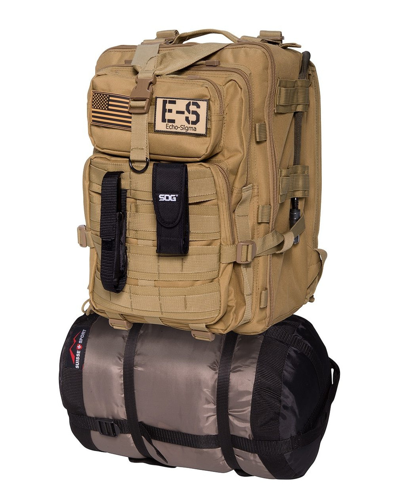
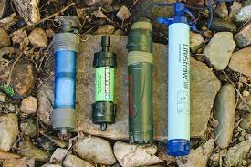

1. Assessing Your Needs
Make sure that when you assemble your Bug-Out Bag that you are assessing all the things you personally will need and can use. You want the bag to be able to sustain you for at least 72 hours. You should take things like potential weather and the local environment into account.
2. The Bag
The bag itself is very important. You want something that is rugged enough to handle the environment. You want something that is big enough to carry everything you need to carry. You also need the bag to be comfortable enough to carry.
3. Water
Water is crucial for survival. A person needs about one gallon of water per day for both drinking and hygine. It is difficult to carry that much water. Instead you should carry things like Nalgene bottles to hold the water and filtration devices to make the water safe. Iodine tablets are a cheap and effective way to make water safe.
